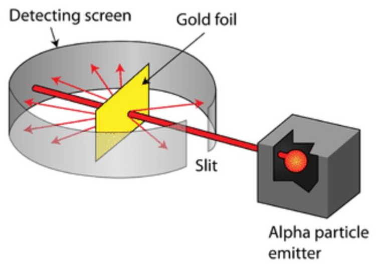

|  |
The Gold Foil ExperimentIn this experiment thin gold leaf was suspended in a vacuum with alpha particles (a form of nuclear radiation with a large positive charge – 2 neutrons and 2 protons joined together)being fired at it. Rutherford expected the alpha particles to pass straight through the thin foil Results: Alpha particles did pass straight through the thin foil. Rutherford determined from this that most of the atom is empty space A small number of alpha particles were being deflected by large angles (>4). From this Rutherford realised that there was a concentration of positive charge in the atom as like charges repel so the positive alpha particles were being repelled by positive charges. An even smaller number of alpha particles came straight back off the foil. This means that the positive charge and mass are concentrated in a tiny volume (i.e . The nucleus). A tiny number means less chance of exact collision. |